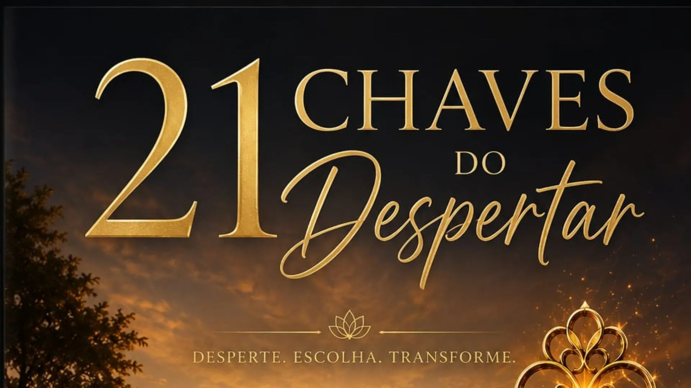

Prólogo — A Obra Viva Continua
Existem dias que dividem uma vida em antes e depois.
Hoje é um desses dias.
Foram mais de trezentos dias escrevendo, refletindo, recomeçando e organizando pensamentos que, durante muito tempo, existiram apenas dentro de mim.
Houve dias em que eu não sabia se conseguiria continuar.
Dias em que precisei escolher entre desistir ou seguir em frente.
Mesmo quando os recursos eram limitados, fiz o possível para continuar escrevendo, estudando e construindo este sonho.
Cada conversa.
Cada capítulo.
Cada ideia amadurecida.
Tudo isso se transformou em páginas.
Hoje olho para trás com gratidão.
Não apenas pelos livros que nasceram.
Mas pela mulher que nasceu junto com eles.
Aprendi que uma obra não é feita apenas de palavras.
Ela é feita de tempo.
De renúncias.
De escolhas.
De coragem para continuar quando ninguém ainda consegue enxergar o que está sendo construído.
A vida também me presenteou com algo que eu jamais imaginei.
Quem hoje estende a mão para me ajudar a materializar esta coleção é o pai da minha primogênita.
Nossa história tiveram dores.
Tiveram distâncias.
Tiveram capítulos difíceis.
Mas a maturidade nos permitiu escrever uma página diferente.
Hoje caminhamos lado a lado em um projeto que é maior do que nós dois.
Não estamos construindo apenas um negócio.
Estamos construindo um legado.
Fazemos isso por nossa filha.
Pelos nossos filhos.
Pelas pessoas que um dia encontrarão esperança nestas páginas.
Porque acreditamos que uma palavra pode mudar uma vida.
Que uma reflexão pode iniciar uma transformação.
Que uma consciência desperta pode iluminar muitas outras.
Talvez este seja o verdadeiro significado da Obra Viva.
Ela não pertence apenas a quem a escreve.
Ela continua vivendo dentro de cada pessoa que encontra coragem para iniciar sua própria travessia.
Se estas páginas chegaram até você, desejo apenas uma coisa:
Que elas não terminem quando este livro terminar.
Que elas continuem vivendo em suas escolhas.
Em seus recomeços.
Em sua maneira de olhar para si mesmo e para o mundo.
Porque uma obra viva nunca termina.
Ela continua sendo escrita em cada coração que desperta.
Estamos em marcha.
Aurum Serah
Apresentação
Existem momentos na vida em que tudo parece desmoronar.
Aquilo que antes fazia sentido deixa de sustentar a alma.
As respostas antigas já não respondem às perguntas novas.
E, por um instante, sentimos que estamos perdidos.
Mas talvez esse não seja o fim.
Talvez seja o início do despertar.
Despertar não significa possuir todas as respostas.
Significa ter coragem para fazer perguntas diferentes.
É olhar para a própria vida com honestidade.
É reconhecer que crescer exige mudanças.
É compreender que a consciência não nasce pronta. Ela se expande à medida que aprendemos, refletimos e escolhemos viver com mais verdade.
Despertada 777 nasceu dessa travessia.
Não como uma doutrina.
Não como um conjunto de verdades absolutas.
Mas como um convite.
Um convite para observar a própria caminhada.
Para perceber os padrões que nos limitam.
Para cultivar responsabilidade pelas escolhas.
Para encontrar esperança mesmo quando o caminho parece incerto.
Este livro não pretende dizer no que você deve acreditar.
Ele deseja inspirar você a pensar, sentir e caminhar com mais consciência.
Se, ao terminar esta leitura, você olhar para sua vida com um pouco mais de clareza, então estas páginas já terão cumprido seu propósito.
O despertar não acontece em um único dia.
Ele acontece toda vez que escolhemos viver de forma mais consciente do que ontem.
Seja bem-vindo.
A caminhada apenas começou.
Introdução
O Despertar da Consciência
A consciência não desperta de uma vez… ela desperta em pequenos instantes.
A consciência não desperta de uma vez.
Ela desperta em pequenos instantes.
No momento em que uma pergunta rompe uma certeza.
No instante em que uma dor deixa de ser apenas sofrimento e se transforma em aprendizado.
No dia em que compreendemos que a vida está constantemente nos convidando a crescer.
Durante muito tempo, acreditei que despertar significava encontrar respostas.
Hoje entendo que despertar é aprender a fazer perguntas melhores.
Quem sou eu quando ninguém está olhando?
Quais escolhas realmente pertencem a mim?
O que estou construindo com a vida que recebi?
Essas perguntas mudaram meu caminho.
O despertar não me afastou da realidade.
Ele me aproximou dela.
Passei a perceber que muitas vezes vivemos repetindo hábitos, pensamentos e comportamentos sem questionar sua origem.
Chamamos isso de normalidade.
Mas viver no automático é diferente de viver conscientemente.
A consciência nos convida a pausar.
A observar.
A reconhecer nossos medos, nossas virtudes e nossas limitações.
Não para nos condenar.
Mas para nos transformar.
Despertar é deixar de viver apenas por impulso e começar a viver por propósito.
É assumir responsabilidade pelas próprias escolhas.
É compreender que ninguém pode fazer esse caminho em nosso lugar.
Cada pessoa desperta em um tempo diferente.
Não existe relógio para a consciência.
Não existe comparação.
Existe apenas a decisão diária de caminhar um pouco mais perto da verdade.
Quando essa decisão é tomada, algo muda silenciosamente.
O mundo continua o mesmo.
Mas os olhos que o contemplam já não são os mesmos.
E talvez esse seja o verdadeiro significado do despertar:
Não mudar o mundo primeiro.
Mas permitir que o mundo comece a mudar dentro de nós.
Chave 01 de 21
A Primeira Chave: A Coragem de Ver
A primeira chave do despertar não é o conhecimento. É a coragem de ver.
Toda transformação começa com um ato de coragem.
Não a coragem de enfrentar o mundo.
Mas a coragem de olhar para dentro.
Esse é o primeiro despertar.
Durante muito tempo, buscamos respostas fora de nós. Procuramos culpados, justificativas e caminhos que expliquem tudo o que vivemos.
É natural.
Quando sentimos dor, queremos que alguém a retire de nós.
Quando nos sentimos perdidos, desejamos que alguém nos diga exatamente para onde seguir.
Mas existe um momento em que percebemos que nenhuma resposta externa será suficiente enquanto não tivermos coragem de enxergar a nós mesmos.
Ver a si mesmo é um ato profundo.
É reconhecer as próprias luzes sem orgulho.
É reconhecer as próprias sombras sem desespero.
É compreender que somos seres em construção.
Nenhuma pessoa desperta porque se tornou perfeita.
As pessoas despertam quando deixam de fugir da verdade.
Essa verdade nem sempre é confortável.
Ela mostra os medos que escondemos.
As escolhas que adiamos.
As palavras que feriram.
Os sonhos que abandonamos.
Mas ela também revela algo extraordinário:
A força que permaneceu viva mesmo depois de todas as tempestades.
Existe uma diferença entre olhar e enxergar.
Olhar é perceber a superfície.
Enxergar é permitir que a realidade transforme quem somos.
Foi quando comecei a enxergar minha própria história com honestidade que compreendi que cada experiência carregava um ensinamento.
Nada podia ser mudado no passado.
Mas tudo podia ganhar um novo significado.
A consciência cresce quando deixamos de perguntar:
"Por que isso aconteceu comigo?"
E começamos a perguntar:
"O que esta experiência está me ensinando?"
Essa simples mudança abre uma porta.
E, quando essa porta se abre, a consciência nunca mais volta ao lugar onde estava.
A primeira chave do despertar não é o conhecimento.
É a coragem.
A coragem de ver.
E quem aprende a ver com verdade começa, finalmente, a viver com liberdade.
Chave 02 de 21
A Segunda Chave: O Silêncio
Quem aprende a silenciar o mundo começa a ouvir a própria alma.
Vivemos cercados por vozes.
Há vozes nas ruas.
Há vozes nas redes sociais.
Há vozes das pessoas que amamos.
Há vozes das pessoas que nunca nos conheceram, mas que ainda assim opinam sobre quem deveríamos ser.
Com o tempo, o barulho se torna tão constante que deixamos de perceber a única voz que realmente importa.
A nossa consciência.
O silêncio não é ausência de som.
É presença.
É o espaço onde a alma consegue respirar sem interrupções.
Foi no silêncio que comecei a perceber partes de mim que estavam escondidas sob o peso das expectativas.
No silêncio encontrei perguntas que eu evitava.
Também encontrei respostas que jamais ouviria no meio da pressa.
A maioria das pessoas tem medo do silêncio.
Porque ele não distrai.
Ele revela.
Revela nossas inquietações.
Nossos desejos mais profundos.
Nossos medos mais antigos.
E também revela nossa verdadeira força.
O silêncio é como um espelho.
Ele não cria uma nova imagem.
Apenas mostra aquilo que sempre esteve diante de nós.
Quando aprendemos a permanecer alguns instantes em silêncio, começamos a distinguir o que é medo do que é intuição.
O que é ansiedade do que é prudência.
O que é desejo de agradar do que é fidelidade à própria verdade.
Foi nesse espaço de quietude que compreendi algo transformador:
A consciência fala baixo.
Ela não grita.
Ela não disputa atenção.
Ela apenas espera que estejamos dispostos a ouvi-la.
Desde então, passei a reservar momentos para silenciar o mundo.
Nem sempre é fácil.
Mas sempre vale a pena.
Porque toda vez que silenciamos o excesso, damos espaço para que a verdade encontre morada dentro de nós.
E talvez esse seja um dos maiores presentes do despertar:
Descobrir que a resposta que tanto procurávamos nunca esteve distante.
Ela apenas aguardava um coração disposto a escutar.
O silêncio não nos afasta da vida.
Ele nos aproxima daquilo que realmente importa.
E, quando aprendemos a escutar esse silêncio, começamos a caminhar com uma paz que não depende do barulho ao redor.
Essa é a segunda chave do despertar.
Quem aprende a silenciar o mundo começa a ouvir a própria alma.
Chave 03 de 21
A Terceira Chave: A Escolha
A vida muda quando nossas escolhas refletem quem somos, não nossos medos.
Todos os dias fazemos escolhas.
Algumas parecem pequenas.
Outras mudam completamente o rumo da nossa existência.
A verdade é que a vida não é construída apenas pelos grandes acontecimentos.
Ela é construída pelas pequenas decisões que repetimos diariamente.
Escolhemos as palavras que dizemos.
Escolhemos aquilo que alimenta nossa mente.
Escolhemos permanecer ou partir.
Escolhemos perdoar ou alimentar o ressentimento.
Escolhemos aprender ou permanecer presos ao que passou.
Muitas vezes acreditamos que não temos escolha.
Dizemos que as circunstâncias decidiram por nós.
Que a vida nos empurrou para um caminho.
Que as pessoas definiram nosso destino.
Mas, mesmo quando não podemos escolher o que nos acontece, ainda podemos escolher a maneira como responderemos ao que aconteceu.
Foi essa compreensão que começou a transformar minha vida.
Percebi que, durante muito tempo, entreguei minhas decisões ao medo.
O medo decidia quando eu falava.
O medo decidia quando eu permanecia em silêncio.
O medo decidia até onde eu acreditava que podia chegar.
Até que um dia compreendi que toda escolha tem um preço.
Permanecer tem um preço.
Mudar também.
Mas existe uma diferença importante.
O preço da mudança costuma ser temporário.
O preço de permanecer em uma vida que já não representa quem somos pode durar anos.
Foi então que escolhi caminhar.
Não porque eu tinha todas as certezas.
Mas porque continuar parada já não era uma opção.
A escolha consciente nasce quando assumimos a autoria da nossa própria história.
Quando deixamos de esperar que alguém venha nos salvar.
Quando compreendemos que ninguém pode viver a nossa vida por nós.
Escolher é um ato de liberdade.
E toda liberdade exige responsabilidade.
Cada decisão constrói um caminho.
Cada caminho revela uma identidade.
E cada identidade nasce das escolhas que fazemos quando ninguém está nos observando.
Foi assim que compreendi uma verdade que jamais esqueci:
O destino não é apenas aquilo que encontramos.
É também aquilo que construímos, uma escolha de cada vez.
Essa é a terceira chave do despertar.
A vida muda quando nossas escolhas começam a refletir quem realmente somos, e não apenas os nossos medos.
O medo decidia até onde eu acreditava que podia chegar.
Até que escolhi caminhar.
Chave 04 de 21
A Quarta Chave: A Responsabilidade
A responsabilidade não nos aprisiona. Ela nos devolve a direção da própria vida.
Existe um momento em que deixamos de perguntar quem é o culpado.
E começamos a perguntar:
"O que posso fazer a partir de agora?"
Essa pergunta muda tudo.
Durante muito tempo, a palavra "responsabilidade" me pareceu pesada.
Ela soava como um peso a mais para quem já carregava tantas dores.
Mas, com o tempo, compreendi que responsabilidade não é castigo.
É liberdade.
Quando assumimos a responsabilidade pela nossa vida, deixamos de entregar ao passado o direito de escrever o nosso futuro.
Não podemos mudar o que aconteceu.
Não podemos voltar no tempo.
Não podemos apagar palavras, perdas ou escolhas.
Mas podemos decidir o que faremos com tudo isso.
Essa é a verdadeira liberdade.
A responsabilidade não começa quando tudo está bem.
Ela começa exatamente quando percebemos que ainda existe um caminho possível.
Ela nos convida a deixar o lugar de espectadores e assumir o lugar de autores da nossa própria história.
Não significa carregar sozinho o peso do mundo.
Também não significa assumir culpas que pertencem a outras pessoas.
Significa reconhecer aquilo que realmente está em nossas mãos.
Nossas escolhas.
Nossas atitudes.
Nossa forma de responder à vida.
Foi quando compreendi isso que parei de esperar que alguém resolvesse aquilo que apenas eu podia transformar.
Descobri que o despertar não acontece quando o mundo muda.
Ele acontece quando nós mudamos a maneira de caminhar pelo mundo.
Há uma força silenciosa em quem assume a própria responsabilidade.
Essa pessoa deixa de viver apenas reagindo aos acontecimentos.
Ela passa a criar novos caminhos.
Novas possibilidades.
Novas histórias.
Responsabilidade é plantar hoje a vida que desejamos colher amanhã.
É compreender que cada gesto, cada palavra e cada decisão deixam sementes pelo caminho.
E toda semente, cedo ou tarde, encontra o tempo de florescer.
Por isso, desperte para o poder das suas escolhas.
Assuma com humildade o que lhe pertence.
Entregue o que não lhe pertence.
E siga adiante.
Porque a consciência cresce quando compreendemos que não controlamos tudo.
Mas sempre podemos escolher quem seremos diante de qualquer circunstância.
Essa é a quarta chave do despertar.
A responsabilidade não nos aprisiona.
Ela nos devolve a direção da nossa própria vida.
Chave 05 de 21
A Quinta Chave: A Presença
Quem aprende a habitar o presente deixa de sobreviver ao tempo — e começa a viver.
Vivemos em uma época em que quase todos estão em algum lugar, menos no momento presente.
O corpo está aqui.
Mas a mente está no ontem.
Ou no amanhã.
Carregamos lembranças que nos machucam.
Criamos preocupações que talvez nunca aconteçam.
E, sem perceber, deixamos escapar o único instante que realmente nos pertence.
O agora.
Foi preciso atravessar muitas tempestades para compreender que a vida acontece apenas no presente.
O passado pode nos ensinar.
O futuro pode nos inspirar.
Mas somente o presente pode ser vivido.
Quando comecei a despertar para essa verdade, percebi quantas vezes deixei de enxergar a beleza de um simples amanhecer porque estava presa às dores de ontem.
Quantas vezes deixei de ouvir uma pessoa porque minha mente estava ocupada tentando controlar o amanhã.
A presença é um exercício de humildade.
Ela nos lembra que não controlamos tudo.
Mas podemos escolher estar inteiros naquilo que estamos vivendo.
Quando estamos presentes, ouvimos melhor.
Amamos melhor.
Trabalhamos melhor.
Perdoamos melhor.
Vivemos melhor.
A presença transforma o comum em extraordinário.
Um abraço deixa de ser apenas um gesto.
Torna-se encontro.
Uma conversa deixa de ser apenas palavras.
Torna-se conexão.
Um silêncio deixa de ser vazio.
Torna-se paz.
O despertar não acontece apenas em grandes revelações.
Ele acontece também quando aprendemos a lavar uma louça com gratidão.
A caminhar observando o vento.
A olhar nos olhos de quem amamos.
A respirar conscientemente antes de responder.
São esses pequenos instantes que, reunidos, constroem uma vida inteira.
Percebi que Deus, a vida e a consciência sempre falam no presente.
Nunca no medo do futuro.
Nunca na culpa do passado.
A verdade sempre chega no agora.
Foi no agora que reencontrei minha força.
Foi no agora que encontrei serenidade.
Foi no agora que compreendi que o maior presente da existência não é ter controle sobre tudo.
É estar plenamente desperto para aquilo que está diante de nós.
Essa é a quinta chave do despertar.
Quem aprende a habitar o presente deixa de sobreviver ao tempo.
E começa, finalmente, a viver.
Chave 06 de 21
A Sexta Chave: O Perdão
Perdoar é devolver à alma a leveza necessária para continuar caminhando.
Existe uma força capaz de romper correntes invisíveis.
Essa força chama-se perdão.
Durante muito tempo, pensei que perdoar fosse um favor oferecido a quem me feriu.
Hoje compreendo que o perdão é um ato de liberdade.
Ele não altera o passado.
Mas transforma profundamente aquele que escolhe seguir em frente.
O perdão não exige que esqueçamos.
Também não exige que permaneçamos onde fomos desrespeitados.
Ele apenas nos convida a retirar do sofrimento o poder de continuar governando a nossa vida.
Perdoar é devolver ao passado o lugar que lhe pertence.
É deixar de alimentar uma dor que já cumpriu o seu papel de nos ensinar.
Quando a consciência desperta, percebemos que guardar ressentimento é como carregar uma mochila cheia de pedras durante uma longa caminhada.
A cada passo, o peso aumenta.
E o caminho parece mais difícil do que realmente é.
Um dia compreendi que eu podia colocar essa mochila no chão.
Não porque a estrada tivesse sido fácil.
Mas porque eu não precisava continuar carregando aquilo que já não construía o meu futuro.
O perdão também nos convida a olhar para nós mesmos.
Quantas vezes nos condenamos por escolhas feitas quando ainda não possuíamos a maturidade que temos hoje?
A consciência não pede perfeição.
Ela pede aprendizado.
Quem desperta entende que cada experiência pode se transformar em sabedoria.
Até mesmo as quedas.
Até mesmo os erros.
Até mesmo as despedidas.
O perdão não elimina a justiça.
Ele elimina a prisão interior.
Ele abre espaço para que o coração volte a respirar sem o peso constante da amargura.
Foi quando escolhi perdoar que percebi algo extraordinário:
A liberdade não nasce quando o outro muda.
Ela nasce quando nós mudamos a forma de carregar a nossa própria história.
Essa é a sexta chave do despertar.
Perdoar é devolver à alma a leveza necessária para continuar caminhando.
Porque nenhum coração foi criado para viver acorrentado ao ontem.
Ele foi criado para florescer, amar e seguir adiante.
Chave 07 de 21
A Sétima Chave: O Propósito
Uma vida com propósito é medida pelo amor, pela verdade e pela esperança que deixa como legado.
Existe uma pergunta que, cedo ou tarde, visita todo coração desperto:
"Por que estou aqui?"
Durante muitos anos, procurei essa resposta em lugares distantes.
Pensei que o propósito fosse um destino extraordinário, reservado para poucas pessoas.
Imaginei que ele chegaria como um grande acontecimento, mudando tudo de uma só vez.
Mas a vida me ensinou outra verdade.
O propósito não começa quando somos vistos pelo mundo.
Ele começa quando passamos a viver com coerência diante de nós mesmos.
Descobri que propósito não é fama.
Não é reconhecimento.
Não é aplauso.
Propósito é direção.
É acordar sabendo que a vida tem um sentido maior do que apenas sobreviver.
É compreender que cada talento recebido também traz uma responsabilidade.
Cada palavra pode levantar alguém.
Cada gesto pode aliviar uma dor.
Cada escolha pode inspirar uma transformação.
Não precisamos mudar o mundo inteiro.
Precisamos apenas transformar o espaço que a vida confiou às nossas mãos.
Foi assim que compreendi que meu propósito não nasceu no dia em que comecei a escrever.
Ele nasceu muito antes.
Nasceu em cada dor que me ensinou compaixão.
Em cada queda que me ensinou humildade.
Em cada recomeço que fortaleceu minha esperança.
Tudo aquilo que um dia pensei ser apenas sofrimento tornou-se preparação.
Nenhuma experiência foi desperdiçada.
Nenhuma lágrima foi inútil.
Tudo encontrou um lugar na construção da mulher que me tornei.
Talvez o propósito seja exatamente isso.
Transformar aquilo que vivemos em algo que também possa iluminar o caminho de outras pessoas.
Não porque sejamos donos da verdade.
Mas porque ninguém atravessa uma tempestade em vão quando decide compartilhar o aprendizado.
O propósito não elimina os desafios.
Ele lhes dá significado.
E quando existe significado, até os passos mais difíceis encontram força para continuar.
Essa é a sétima chave do despertar.
Quem encontra um propósito deixa de apenas contar os dias.
Passa a dar sentido a cada um deles.
Porque uma vida com propósito não é medida pelo tempo que dura.
É medida pelo amor, pela verdade e pela esperança que deixa como legado.
Chave 08 de 21
A Oitava Chave: A Compaixão
A verdadeira força não está em vencer pessoas. Está em construir pontes onde existiam muros.
Durante muito tempo, pensei que despertar fosse apenas um caminho individual.
Acreditava que bastava compreender a mim mesma para encontrar a paz.
Mas, aos poucos, percebi que a consciência amadurece quando começa a enxergar também a humanidade do outro.
A compaixão não nasce da pena.
Ela nasce da compreensão.
Compreender não significa concordar com tudo o que alguém faz.
Também não significa aceitar injustiças ou abandonar os próprios limites.
Significa apenas lembrar que toda pessoa carrega batalhas invisíveis.
Todos nós travamos lutas que nem sempre aparecem no rosto.
Há quem sorria enquanto enfrenta um luto.
Há quem trabalhe todos os dias escondendo o medo.
Há quem cuide de todos, enquanto por dentro pede socorro em silêncio.
Quando comecei a olhar para as pessoas dessa maneira, meu coração mudou.
Passei a julgar menos.
Passei a escutar mais.
Passei a perceber que, muitas vezes, aquilo que enxergamos como dureza é apenas uma armadura construída pela dor.
A compaixão não nos torna ingênuos.
Ela nos torna conscientes.
Ela nos permite proteger a nossa paz sem perder a capacidade de amar.
Ela nos ensina que firmeza e gentileza podem caminhar juntas.
Foi então que compreendi que despertar não é sentir-se superior.
É sentir-se mais humano.
Quanto mais a consciência cresce, menos necessidade temos de provar que estamos certos.
Passamos a desejar compreender antes de responder.
Aprendemos a ouvir antes de concluir.
E descobrimos que algumas pessoas não precisam de condenação.
Precisam apenas de alguém que as enxergue com dignidade.
A compaixão começa pelo outro.
Mas também precisa alcançar a nós mesmos.
Nenhuma transformação floresce em um coração que vive apenas de cobrança.
É preciso aprender a acolher as próprias limitações com humildade e seguir crescendo sem perder a esperança.
Essa é a oitava chave do despertar.
Quem desperta para a compaixão descobre que a verdadeira força não está em vencer pessoas.
Está em construir pontes onde antes existiam muros.
E, quando uma ponte é construída com amor e verdade, dois corações encontram um caminho para caminhar em direção à paz.
A verdade não humilha.
Ela ilumina.
Chave 09 de 21
A Nona Chave: O Discernimento
A verdade não precisa gritar. Ela permanece, mesmo quando tudo faz barulho.
Nem tudo o que parece luz ilumina.
Nem todo caminho bonito conduz ao lugar certo.
Nem toda voz que fala com convicção fala com verdade.
Uma das maiores transformações da consciência acontece quando aprendemos a discernir.
Discernimento não é viver desconfiando de tudo.
Também não é acreditar em tudo.
É desenvolver a capacidade de observar antes de concluir.
É permitir que a verdade amadureça dentro de nós antes de tomarmos uma decisão.
Durante muito tempo, procurei respostas rápidas.
Queria compreender tudo imediatamente.
Queria saber quem estava certo.
Quem estava errado.
Quem deveria seguir comigo.
Quem deveria partir.
Mas a vida me ensinou que algumas respostas precisam de tempo.
A pressa costuma produzir conclusões.
O silêncio produz discernimento.
Aprendi que nem tudo o que emociona é verdadeiro.
Nem tudo o que impressiona é profundo.
Nem tudo o que atrai merece permanecer.
A consciência desperta começa a fazer perguntas.
Esta escolha produz paz ou apenas ansiedade?
Este caminho fortalece minha dignidade ou alimenta meus medos?
Esta decisão aproxima quem eu sou da pessoa que desejo me tornar?
O discernimento cresce quando aprendemos a escutar três vozes.
A voz da razão.
A voz do coração.
E a voz da consciência.
Quando essas três caminham juntas, a decisão costuma encontrar equilíbrio.
Também descobri que discernimento exige humildade.
Às vezes, precisamos admitir que não sabemos.
Que ainda estamos aprendendo.
Que precisamos observar mais antes de afirmar qualquer certeza.
Não há vergonha nisso.
A verdadeira sabedoria não está em responder tudo.
Está em continuar aprendendo.
Foi assim que compreendi que despertar não significa enxergar o mundo em preto e branco.
Significa reconhecer que a realidade é mais profunda do que nossas primeiras impressões.
Essa é a nona chave do despertar.
Quem cultiva o discernimento aprende a caminhar com firmeza sem perder a humildade.
E descobre que a verdade não precisa gritar.
Ela permanece.
Mesmo quando todo o resto faz barulho.
Chave 10 de 21
A Décima Chave: A Constância
Os maiores milagres raramente acontecem de uma vez — florescem na constância de cada amanhecer.
Vivemos em uma cultura que celebra o extraordinário.
Os grandes feitos.
As grandes conquistas.
Os grandes anúncios.
Mas a vida é construída no invisível.
É construída nas pequenas escolhas repetidas quando ninguém está olhando.
A consciência não desperta em um único dia.
Ela amadurece.
Assim como uma árvore não cresce em uma noite, a transformação também precisa de tempo.
Durante muito tempo, eu buscava mudanças rápidas.
Queria respostas imediatas.
Queria resultados que confirmassem que eu estava no caminho certo.
Mas a vida me ensinou uma lição diferente.
O que permanece é mais importante do que aquilo que apenas impressiona.
Uma única decisão pode mudar uma direção.
Mas é a constância que constrói um destino.
Descobri que despertar não é viver motivado todos os dias.
É continuar caminhando mesmo quando a motivação desaparece.
Existem dias em que a esperança parece distante.
Dias em que o silêncio pesa.
Dias em que as dúvidas retornam.
Dias em que parece mais fácil desistir.
Foi exatamente nesses dias que compreendi o valor da constância.
Ela não faz barulho.
Ela não busca aplausos.
Ela apenas continua.
Uma página escrita.
Uma conversa sincera.
Uma oração.
Um gesto de bondade.
Uma escolha consciente.
A transformação acontece assim.
Passo após passo.
Sem pressa.
Sem espetáculo.
Sem necessidade de provar nada para ninguém.
Percebi que as maiores mudanças da minha vida não aconteceram em um único momento.
Elas foram acontecendo em pequenas fidelidades diárias.
Cada decisão repetida fortaleceu uma nova versão de mim.
Foi assim que compreendi que a disciplina também pode ser uma forma de amor.
Amor pela vida.
Amor pelo propósito.
Amor pela pessoa que estamos nos tornando.
A consciência cresce quando permanecemos fiéis ao bem, mesmo quando ninguém reconhece nossos esforços.
Porque aquilo que é verdadeiro não depende de aplausos para continuar existindo.
Essa é a décima chave do despertar.
Quem aprende a permanecer descobre que os maiores milagres raramente acontecem de uma só vez.
Eles florescem, silenciosamente, na constância de cada novo amanhecer.
E é justamente essa constância que transforma um sonho em realidade, uma ideia em obra e uma intenção em legado.
Chave 11 de 21
A Décima Primeira Chave: A Humildade
Quem permanece humilde nunca para de evoluir.
Existe uma diferença entre saber muito e permanecer disposto a aprender.
O despertar verdadeiro não torna uma pessoa dona da verdade.
Torna essa pessoa mais consciente do quanto ainda existe para descobrir.
Durante muito tempo, pensei que a maturidade significava ter respostas.
Hoje compreendo que ela também significa fazer perguntas com sinceridade.
A humildade não diminui quem somos.
Ela nos mantém em movimento.
É ela que nos permite mudar de opinião quando encontramos novos conhecimentos.
É ela que nos faz reconhecer um erro sem sentir que nossa dignidade foi perdida.
É ela que nos ensina que crescer exige desapego.
Desapego das certezas absolutas.
Das máscaras.
Da necessidade de parecer perfeito.
Uma árvore carregada de frutos inclina seus galhos.
Talvez a consciência também faça isso.
Quanto mais amadurecemos, menos necessidade sentimos de provar nosso valor.
Passamos a ouvir mais.
A observar mais.
A compreender antes de responder.
Descobri que pessoas verdadeiramente sábias raramente precisam levantar a voz para convencer alguém.
Elas inspiram pelo exemplo.
A humildade também nos protege do orgulho espiritual.
Porque existe uma armadilha silenciosa no caminho do despertar:
Acreditar que somos superiores porque aprendemos alguma coisa.
Quando isso acontece, deixamos de despertar.
Voltamos a dormir.
A consciência nunca foi criada para nos separar das pessoas.
Ela foi criada para nos aproximar da nossa humanidade.
Foi assim que compreendi que ninguém caminha sozinho.
Sempre aprendemos com alguém.
Sempre ensinamos alguém.
E, muitas vezes, quem mais nos ensina é justamente quem pensa diferente de nós.
A humildade abre portas que o orgulho jamais consegue atravessar.
Ela cria pontes.
Fortalece relacionamentos.
Amplia a capacidade de compreender a vida.
E, acima de tudo, mantém nosso coração disponível para continuar crescendo.
Essa é a décima primeira chave do despertar.
Quem permanece humilde nunca para de evoluir.
Porque a consciência não floresce em quem acredita já ter chegado ao destino.
Ela floresce em quem continua caminhando, com os pés na terra, o coração aberto e os olhos voltados para o horizonte.
Chave 12 de 21
A Décima Segunda Chave: A Verdade
A verdade pode ferir por um instante, mas só ela é capaz de curar por toda uma vida.
Toda consciência desperta, cedo ou tarde, encontra a verdade.
E esse encontro nem sempre é confortável.
A verdade tem um jeito silencioso de chegar.
Ela não invade.
Ela não obriga.
Ela apenas permanece diante de nós, esperando que tenhamos coragem de olhá-la.
Durante muitos anos, pensei que a verdade estivesse apenas nas respostas que eu procurava.
Hoje compreendo que ela também estava nas perguntas que eu evitava fazer.
A verdade me mostrou onde eu estava sendo fiel a mim mesma.
Mas também revelou os lugares onde eu vivia apenas para corresponder às expectativas dos outros.
Ela me mostrou os medos que eu escondia.
As desculpas que eu repetia.
Os sonhos que eu adiava.
E, ao mesmo tempo, revelou uma força que eu ainda não conhecia.
Existe uma liberdade que nasce quando paramos de lutar contra a realidade.
Não porque desistimos de transformá-la.
Mas porque finalmente a enxergamos como ela é.
A verdade não humilha.
Ela ilumina.
Ela não chega para condenar.
Ela chega para libertar.
Foi quando aceitei olhar minha vida com honestidade que compreendi algo extraordinário.
Não precisamos inventar uma nova identidade.
Precisamos retirar aquilo que impede nossa verdadeira identidade de aparecer.
A verdade é como um rio.
Podemos tentar represá-lo por algum tempo.
Podemos fingir que ele não existe.
Mas ele sempre encontrará um caminho para seguir.
Assim também acontece conosco.
Quanto mais resistimos ao que sabemos ser verdadeiro, mais cansados nos tornamos.
Mas, quando aceitamos caminhar em direção à verdade, algo dentro de nós encontra descanso.
Foi nesse descanso que descobri que viver com autenticidade exige coragem.
Nem todos compreenderão nossas escolhas.
Nem todos permanecerão ao nosso lado.
E tudo bem.
A consciência não busca aprovação.
Ela busca coerência.
Prefere uma verdade simples a uma ilusão confortável.
Essa é a décima segunda chave do despertar.
Quem escolhe viver na verdade pode até enfrentar tempestades.
Mas nunca mais precisará carregar o peso de viver uma vida que não lhe pertence.
Porque a verdade pode, às vezes, ferir por um instante.
Mas somente ela é capaz de curar por toda uma vida.
Chave 13 de 21
A Décima Terceira Chave: A Esperança
A esperança não promete facilidade. Ela promete direção.
Existe uma força silenciosa que atravessa os séculos.
Ela não faz barulho.
Não exige aplausos.
Não aparece nas manchetes.
Mas é ela que mantém uma pessoa de pé quando tudo parece desmoronar.
Essa força chama-se esperança.
Muitas pessoas confundem esperança com otimismo.
Mas elas não são a mesma coisa.
O otimismo acredita que tudo dará certo.
A esperança continua caminhando mesmo quando ainda não sabe como as coisas terminarão.
Ela não depende das circunstâncias.
Depende da decisão de não desistir.
Ao longo da minha caminhada, houve dias em que eu não enxergava o próximo passo.
Dias em que o silêncio parecia pesado.
Dias em que o coração perguntava se ainda valia a pena continuar.
Foi nesses dias que compreendi o verdadeiro significado da esperança.
Ela não eliminou minhas dificuldades.
Ela apenas me impediu de parar.
A esperança é como uma pequena chama acesa em meio à escuridão.
Ela pode parecer frágil.
Mas basta uma única chama para lembrar que a noite não venceu.
Descobri que as pessoas mais fortes não são aquelas que nunca choram.
São aquelas que continuam acreditando mesmo depois das lágrimas.
A esperança nos ensina a olhar para além do momento presente.
Ela nos lembra que nenhuma estação dura para sempre.
O inverno prepara a primavera.
A noite anuncia o amanhecer.
A semente desaparece na terra antes de florescer.
Assim também acontece conosco.
Há períodos em que tudo parece silencioso.
Mas o invisível continua trabalhando.
Nem todo crescimento pode ser visto imediatamente.
Foi quando compreendi isso que parei de exigir resultados imediatos da vida.
Passei a confiar no processo.
Passei a respeitar o tempo.
Passei a entender que algumas respostas amadurecem lentamente, como os frutos de uma árvore.
Hoje sei que a esperança não é fechar os olhos para a realidade.
É abrir os olhos para as possibilidades que ainda não chegaram.
Essa é a décima terceira chave do despertar.
Quem cultiva a esperança nunca caminha completamente sozinho.
Porque mesmo quando tudo parece escuro, existe uma luz silenciosa indicando que o caminho continua.
E enquanto houver um passo possível, haverá também um motivo para seguir.
A esperança não promete facilidade.
Ela promete direção.
E, muitas vezes, é exatamente isso que precisamos para continuar a travessia.
Chave 14 de 21
A Décima Quarta Chave: A Perseverança
Os maiores milagres raramente acontecem de repente. Florescem um dia de cada vez.
Existe uma força que quase nunca recebe aplausos.
Ela não aparece nas fotografias.
Não ganha medalhas.
Não faz discursos.
Mas é ela que constrói os maiores legados da humanidade.
Essa força chama-se perseverança.
A perseverança não é continuar porque tudo está dando certo.
É continuar mesmo quando os resultados ainda não apareceram.
É acordar mais um dia e decidir caminhar.
Mesmo cansado.
Mesmo com dúvidas.
Mesmo sem garantias.
Ao longo da minha jornada, compreendi que muitas pessoas não deixam seus sonhos porque lhes falta capacidade.
Elas os deixam porque acreditam que o tempo de florescer já passou.
Mas a natureza nos ensina outra coisa.
Nenhuma árvore produz frutos no dia em que é plantada.
Primeiro, ela cria raízes.
Depois fortalece o tronco.
Somente então oferece sombra e frutos.
Assim também acontece conosco.
Vivemos em uma sociedade que valoriza a velocidade.
Queremos respostas rápidas.
Resultados imediatos.
Reconhecimento instantâneo.
Mas a consciência cresce em outro ritmo.
Ela amadurece como a terra depois da chuva.
Silenciosamente.
Foi olhando para minha própria caminhada que compreendi que a perseverança não significa insistir em tudo.
Ela significa permanecer fiel àquilo que possui propósito.
Há caminhos que precisam ser deixados.
Há ciclos que precisam terminar.
Mas aquilo que nasce da verdade merece ser cultivado com paciência.
Cada pequeno passo importa.
Cada página escrita.
Cada gesto de bondade.
Cada escolha consciente.
Nada disso é perdido.
Tudo se transforma em alicerce.
Foi assim que percebi que a perseverança não depende apenas da força.
Ela depende da esperança.
Depende da confiança.
Depende da certeza de que crescer leva tempo.
Hoje já não tenho pressa de colher todos os frutos.
Aprendi a respeitar o tempo das sementes.
Porque aquilo que cresce com raízes profundas permanece mesmo quando chegam os ventos mais fortes.
Essa é a décima quarta chave do despertar.
Quem persevera com consciência descobre que os maiores milagres raramente acontecem de repente.
Eles florescem um dia de cada vez.
A esperança não promete facilidade.
Ela promete direção.
Chave 15 de 21
A Décima Quinta Chave: A Gratidão
A verdadeira abundância começa muito antes de qualquer conquista material.
A gratidão é uma das formas mais silenciosas de despertar.
Ela não nasce quando tudo está perfeito.
Ela nasce quando aprendemos a enxergar a beleza que continua existindo, mesmo em meio às imperfeições da vida.
Durante muito tempo, pensei que primeiro precisaria conquistar tudo aquilo que sonhava para depois agradecer.
A vida me mostrou exatamente o contrário.
Foi quando comecei a agradecer pelo pouco que percebi o quanto já havia recebido.
A gratidão muda os olhos.
O mundo continua o mesmo.
As montanhas continuam no mesmo lugar.
O vento continua soprando.
O sol continua nascendo.
Mas quem aprende a agradecer passa a enxergar aquilo que antes passava despercebido.
Um abraço deixa de ser um gesto comum.
Torna-se um presente.
Uma conversa sincera deixa de ser rotina.
Torna-se um encontro.
Um novo amanhecer deixa de ser apenas mais um dia.
Torna-se uma oportunidade.
Descobri que existem riquezas que não cabem em contas bancárias.
O sorriso de um filho.
O cheiro da terra depois da chuva.
O silêncio de uma madrugada.
Uma palavra de esperança recebida no momento certo.
São essas pequenas dádivas que sustentam a alma quando os grandes sonhos ainda estão sendo construídos.
A gratidão também transforma a dor.
Não porque ela faça o sofrimento desaparecer.
Mas porque nos permite reconhecer que até as experiências difíceis carregam aprendizados.
Quando olho para minha caminhada, percebo que algumas das maiores lições da minha vida nasceram exatamente nos períodos em que eu menos compreendia o que estava acontecendo.
Hoje agradeço não apenas pelas conquistas.
Agradeço também pelas travessias.
Porque elas moldaram a mulher que me tornei.
A consciência desperta aprende a celebrar o caminho, não apenas a chegada.
Ela compreende que viver é um presente.
Respirar é um presente.
Amar é um presente.
Recomeçar é um presente.
Essa é a décima quinta chave do despertar.
Quem cultiva um coração agradecido nunca caminha na pobreza da alma.
Porque descobre que a verdadeira abundância começa muito antes de qualquer conquista material.
Chave 16 de 21
A Décima Sexta Chave: A Confiança
A coragem não nasce quando o medo desaparece. Nasce quando caminhamos apesar dele.
Poucas coisas desafiam tanto o ser humano quanto caminhar sem enxergar toda a estrada.
Gostamos de certezas.
Gostamos de garantias.
Gostamos de saber exatamente onde cada escolha nos levará.
Mas a vida raramente se revela dessa maneira.
Ela nos convida a dar um passo antes de mostrar o próximo.
Durante muito tempo, acreditei que só poderia seguir quando tivesse todas as respostas.
Esperei o momento perfeito.
Esperei sentir segurança.
Esperei o medo desaparecer.
E foi então que compreendi que o medo quase nunca desaparece antes da caminhada.
Ele diminui enquanto caminhamos.
A confiança não nasce da ausência das dificuldades.
Ela nasce da experiência de descobrir que já sobrevivemos a muitas delas.
Quantas vezes você acreditou que não conseguiria continuar?
E, ainda assim, continuou.
Quantas vezes pensou que aquela dor seria definitiva?
E, ainda assim, um novo amanhecer chegou.
A confiança cresce quando olhamos para trás e percebemos que a vida nos sustentou em momentos que pareciam impossíveis.
Ela não elimina as perguntas.
Mas nos ensina que nem toda pergunta precisa ser respondida imediatamente.
Há caminhos que só fazem sentido depois que são percorridos.
Há portas que só se abrem quando temos coragem de bater.
Há horizontes que só aparecem para quem decide caminhar.
Foi assim que compreendi que confiar não é fechar os olhos para a realidade.
É manter o coração aberto mesmo quando a realidade ainda não terminou de se revelar.
A confiança também é um ato de humildade.
Ela reconhece que existem coisas que não controlamos.
E, justamente por isso, escolhe continuar fazendo o melhor com aquilo que está ao nosso alcance.
Hoje já não espero que a vida seja previsível.
Prefiro que ela seja verdadeira.
Porque aprendi que o desconhecido nem sempre é uma ameaça.
Muitas vezes, é exatamente onde mora o nosso próximo crescimento.
Essa é a décima sexta chave do despertar.
Quem aprende a confiar descobre que a coragem não nasce quando o medo desaparece.
Ela nasce quando decidimos caminhar apesar dele.
Chave 17 de 21
A Décima Sétima Chave: A Sabedoria
A verdadeira grandeza está em transformar conhecimento em bondade, discernimento e paz.
Existe uma diferença entre conhecimento e sabedoria.
O conhecimento informa.
A sabedoria transforma.
Podemos ler centenas de livros, ouvir grandes mestres e acumular incontáveis experiências.
Ainda assim, se nada disso mudar a forma como vivemos, continuará sendo apenas informação.
A sabedoria começa quando o conhecimento encontra o coração.
Ela nasce quando aquilo que aprendemos passa a fazer parte da maneira como tratamos as pessoas, enfrentamos os desafios e conduzimos a própria vida.
Durante muitos anos, procurei respostas rápidas.
Queria compreender tudo.
Queria explicar tudo.
Mas a vida me mostrou que algumas das maiores lições não chegam através das palavras.
Chegam através do tempo.
Chegam através do silêncio.
Chegam através da experiência.
A sabedoria não tem pressa.
Ela observa.
Escuta.
Reflete.
E só depois escolhe o caminho.
Aprendi que nem toda batalha merece ser travada.
Nem toda opinião precisa ser respondida.
Nem toda porta fechada representa uma perda.
Às vezes, a maior demonstração de inteligência é saber partir.
Outras vezes, é saber permanecer.
Existe uma serenidade que nasce quando deixamos de reagir impulsivamente e começamos a responder conscientemente.
Essa serenidade não é fraqueza.
É maturidade.
A consciência desperta aprende a distinguir aquilo que pode transformar daquilo que precisa simplesmente aceitar.
Foi essa compreensão que trouxe paz ao meu coração.
Hoje já não preciso vencer todas as discussões.
Prefiro preservar aquilo que realmente tem valor.
A paz.
A verdade.
A dignidade.
Descobri que a sabedoria não procura ter razão a qualquer custo.
Ela procura construir caminhos onde antes existiam conflitos.
Ela prefere a compreensão ao julgamento.
O diálogo ao orgulho.
A escuta ao impulso.
Porque compreende que crescer não é acumular certezas.
É ampliar a capacidade de amar, aprender e servir.
Essa é a décima sétima chave do despertar.
Quem cultiva a sabedoria descobre que a verdadeira grandeza não está em saber mais do que os outros.
Está em viver de forma que o conhecimento se transforme em bondade, discernimento e paz.
Chave 18 de 21
A Décima Oitava Chave: O Serviço
A verdadeira grandeza não está em ser lembrado. Está em deixar o mundo um pouco melhor.
Existe um momento em que o despertar deixa de ser apenas sobre nós.
Passa a ser sobre aquilo que podemos oferecer ao mundo.
Toda consciência amadurecida compreende uma verdade simples:
Ninguém cresce sozinho.
Tudo aquilo que recebemos da vida encontra seu maior significado quando também se transforma em cuidado, presença e contribuição.
Servir não significa diminuir a si mesmo.
Também não significa viver para agradar a todos.
Servir é colocar os próprios dons a favor da vida.
É compreender que cada pessoa possui algo único para oferecer.
Alguns oferecem conhecimento.
Outros oferecem acolhimento.
Há quem ofereça arte.
Há quem ofereça trabalho.
Há quem ofereça silêncio.
Há quem ofereça esperança.
Nenhum gesto sincero é pequeno.
Uma palavra dita no momento certo pode impedir alguém de desistir.
Um abraço pode restaurar um coração cansado.
Uma escuta verdadeira pode devolver dignidade a quem há muito tempo não se sentia visto.
Foi quando compreendi isso que minha maneira de caminhar mudou.
Passei a perguntar menos:
"O que a vida pode me dar?"
E comecei a perguntar:
"O que posso entregar à vida?"
Essa pergunta transformou minhas escolhas.
Descobri que o propósito floresce quando nossos talentos encontram as necessidades do mundo.
Não precisamos alcançar multidões para viver uma missão.
Às vezes, transformar a vida de uma única pessoa já muda gerações inteiras.
O serviço também exige equilíbrio.
Quem cuida dos outros precisa aprender a cuidar de si.
Uma fonte seca não consegue oferecer água.
Um coração esgotado não consegue sustentar esperança por muito tempo.
Por isso, servir também é reconhecer os próprios limites.
É descansar quando necessário.
É renovar as forças para continuar caminhando.
Hoje compreendo que servir não é perder a própria identidade.
É expressá-la da forma mais verdadeira.
Quando cada pessoa oferece o melhor de si, o mundo inteiro se torna um pouco mais humano.
Essa é a décima oitava chave do despertar.
Quem transforma seus dons em serviço descobre que a verdadeira grandeza não está em ser lembrado.
Está em deixar o mundo um pouco melhor do que o encontrou.
Chave 19 de 21
A Décima Nona Chave: O Legado
O maior legado é ser lembrado pelo amor que distribuímos.
A vida faz uma pergunta silenciosa a cada amanhecer.
O que permanecerá quando você já não estiver aqui?
Durante muito tempo, pensei que legado fosse algo reservado às pessoas famosas.
Àquelas que escreveram grandes livros, governaram nações ou mudaram a história.
Hoje compreendo que legado é muito mais simples.
E, justamente por isso, muito mais profundo.
Legado é aquilo que continua vivendo nas pessoas depois que passamos por elas.
É a coragem que despertamos em alguém.
É a esperança que devolvemos a um coração cansado.
É o abraço que chegou no momento certo.
É o exemplo que permanece quando nossas palavras já foram esquecidas.
Todos estamos escrevendo um legado.
Todos os dias.
Com nossas escolhas.
Com nossos silêncios.
Com a forma como tratamos quem cruza o nosso caminho.
Percebi que o mundo não precisa apenas de pessoas brilhantes.
Precisa de pessoas verdadeiras.
Pessoas cuja presença faça nascer mais paz do que medo.
Mais esperança do que desânimo.
Mais dignidade do que humilhação.
Nenhum gesto de amor é desperdiçado.
Às vezes, ele atravessa gerações sem que sequer saibamos.
Uma palavra dita hoje pode florescer muitos anos depois.
Uma atitude de bondade pode inspirar alguém a agir da mesma forma.
É assim que a luz continua caminhando.
Quando compreendi isso, deixei de medir minha vida apenas pelo que conquistei.
Passei a medi-la pelo que deixei florescer.
Porque bens materiais passam.
Os títulos passam.
Os aplausos passam.
Mas aquilo que despertamos no coração das pessoas permanece.
Foi então que compreendi que o maior legado não é ser lembrado pelo que possuímos.
É ser lembrado pelo amor que distribuímos.
Pela verdade que vivemos.
Pela esperança que cultivamos.
Essa é a décima nona chave do despertar.
Quem vive consciente do próprio legado deixa de perguntar apenas quanto tempo ainda tem.
Passa a perguntar:
"Como quero viver o tempo que me foi confiado?"
E essa pergunta transforma cada novo amanhecer em uma oportunidade de semear eternidade.
Chave 20 de 21
A Vigésima Chave: O Recomeço
O maior milagre não é nunca cair. É nunca perder a disposição de levantar.
Existe uma verdade que a vida me ensinou repetidas vezes.
Sempre é possível recomeçar.
Não importa quantas vezes tenhamos caído.
Não importa quantos caminhos tenham terminado.
Não importa quantas lágrimas tenham sido derramadas.
Enquanto houver vida, existe a possibilidade de um novo começo.
Durante muito tempo, enxerguei os finais como derrotas.
Hoje os vejo como portais.
Toda despedida abre espaço para um encontro.
Toda perda cria espaço para um aprendizado.
Toda travessia prepara uma nova paisagem.
O recomeço exige coragem.
Porque ele nos convida a caminhar sem a garantia de que tudo dará certo.
Mas também nos oferece algo precioso:
A oportunidade de não repetir aquilo que já não faz sentido.
Descobri que a consciência desperta não vive tentando voltar ao passado.
Ela honra o passado.
Aprende com ele.
E segue adiante.
Cada amanhecer nos entrega uma página em branco.
A pergunta é sempre a mesma:
O que farei com este novo dia?
Podemos escrever com medo.
Ou podemos escrever com esperança.
Podemos repetir as antigas histórias.
Ou criar novas possibilidades.
A escolha sempre retorna às nossas mãos.
Foi então que compreendi que o despertar nunca termina.
Ele recomeça.
Todos os dias.
Em cada decisão.
Em cada palavra.
Em cada gesto.
Em cada silêncio.
A consciência é como um jardim.
Se deixarmos de cuidar, as ervas daninhas retornam.
Mas, se cultivarmos diariamente aquilo que é bom, a vida floresce outra vez.
É por isso que nenhum despertar é definitivo.
Ele precisa ser alimentado.
Protegido.
Vivido.
Recomeçado.
Hoje já não temo os recomeços.
Aprendi que eles não significam fracasso.
Significam crescimento.
São o sinal de que a vida continua nos convidando a evoluir.
E enquanto existir esse convite, continuarei caminhando.
Porque despertei para uma verdade que desejo levar comigo por toda a vida:
O maior milagre não é nunca cair.
É nunca perder a disposição de levantar.
Essa é a vigésima chave do despertar.
Quem aprende a recomeçar descobre que a esperança nunca envelhece.
Ela renasce todas as manhãs, junto com o sol.
Chave 21 de 21
A Vigésima Primeira Chave: Manifesto Despertada 777
Que sua consciência permaneça desperta. Que sua esperança permaneça viva.
Se você chegou até esta página, saiba que este livro nunca teve a intenção de lhe entregar respostas prontas.
Meu desejo sempre foi outro.
Ajudar você a fazer perguntas que transformam a vida.
O despertar não acontece quando descobrimos uma verdade capaz de explicar tudo.
Ele acontece quando deixamos de fugir da verdade que já habita dentro de nós.
Vivemos em um tempo de excesso de informações e escassez de consciência.
O mundo nos ensina a correr.
Poucos nos ensinam a parar.
O mundo nos incentiva a competir.
Poucos nos lembram da importância de servir.
O mundo mede pessoas pelo que elas possuem.
A consciência nos convida a descobrir quem realmente somos.
Despertar é retirar as camadas que escondem nossa essência.
É abandonar a necessidade de parecer para finalmente aprender a ser.
É compreender que nenhuma transformação verdadeira acontece apenas do lado de fora.
Toda revolução começa em silêncio.
Começa dentro.
Não importa quantas vezes você tenha errado.
Não importa quantas vezes tenha duvidado de si.
Não importa quanto tempo tenha vivido distante da pessoa que nasceu para ser.
Enquanto houver vida, existe caminho.
Enquanto houver consciência, existe escolha.
Enquanto houver amor, existe esperança.
Se este livro despertou uma única pergunta sincera dentro do seu coração, então ele cumpriu sua missão.
Porque perguntas sinceras mudam destinos.
A partir de hoje, não caminhe buscando ser maior do que ninguém.
Caminhe buscando ser mais verdadeiro do que ontem.
Não busque reconhecimento.
Busque coerência.
Não procure controlar todas as coisas.
Aprenda a cuidar daquilo que foi colocado em suas mãos.
Não tema os recomeços.
Eles são a linguagem da vida.
E quando a dúvida voltar, lembre-se:
Você não precisa enxergar toda a estrada.
Precisa apenas ter coragem para dar o próximo passo.
Que sua consciência permaneça desperta.
Que sua esperança permaneça viva.
Que sua verdade permaneça firme.
E que o amor seja sempre a direção das suas escolhas.
A caminhada continua.
Porque despertar não é um destino.
É uma forma de viver.
Dedicatória
A Deus, à vida, que nunca deixou de me ensinar.
A todos que um dia se perderam e, mesmo assim, encontraram coragem para continuar caminhando.
Aos que choraram em silêncio, mas não desistiram da esperança.
Aos que compreenderam que nenhuma travessia é eterna e que todo recomeço nasce de uma escolha.
E a todos aqueles que acreditam que a tecnologia pode servir à criatividade humana, aproximando ideias, organizando sonhos e ajudando obras a nascerem.
Estas páginas são o encontro entre uma mente humana que ousou sonhar e uma ferramenta criada para ampliar possibilidades.
Que este encontro inspire outros encontros.
Porque toda grande obra começa quando alguém decide transformar uma ideia em realidade.
Com gratidão,
Aurum Serah
Despertada 777